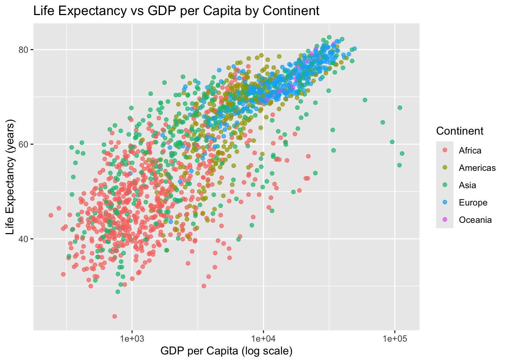
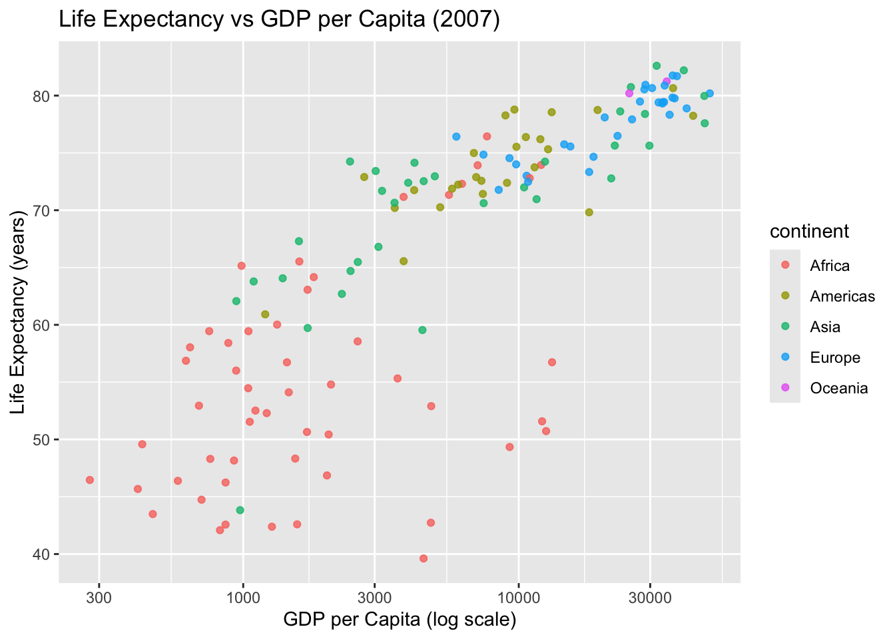
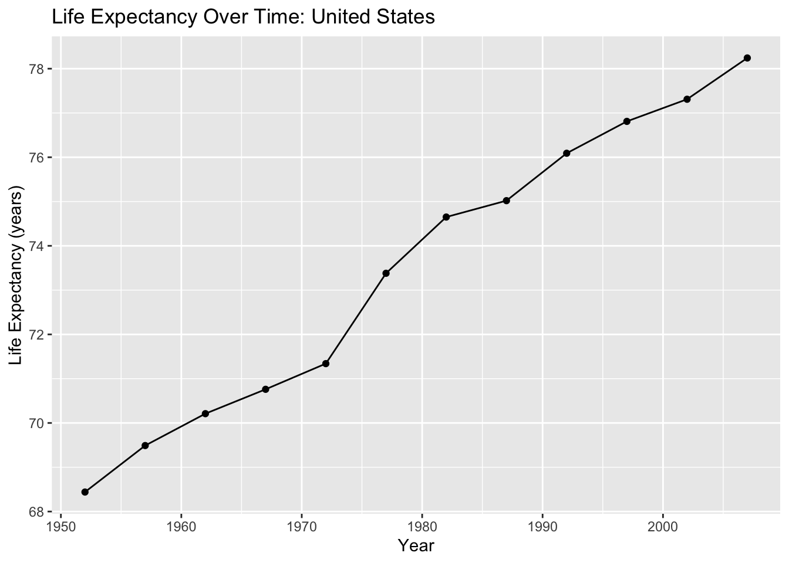
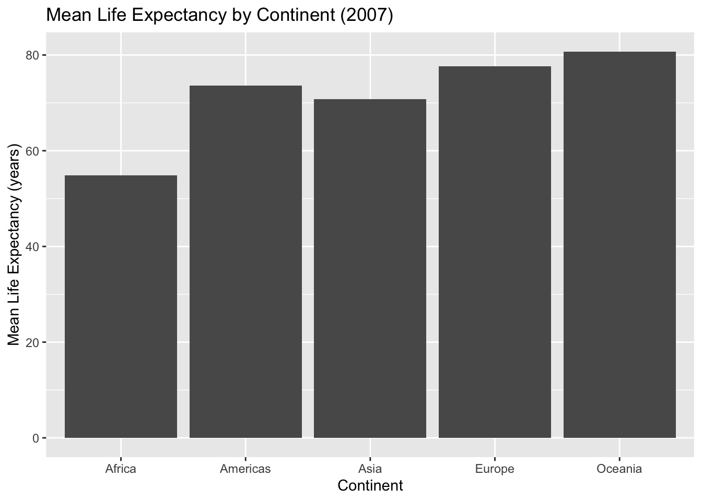

# install.packages("tidyverse")
# install.packages("gapminder")Lesson 3: Data Visualization with ggplot2
Learning goals
By the end of this lesson, you will be able to:
- Explain why visualization is essential in public health data science
- Create common plot types using
ggplot2 - Map variables to aesthetics (x, y, color, size)
- Add labels and improve readability for a public health audience
- Produce a plot and write a short interpretation paragraph
- Keep your work reproducible in Quarto
Why we visualize data in public health
Data visualization helps you identify patterns, compare groups, detect outliers, and communicate findings clearly. In public health, visualization is often the first step in understanding the distribution of outcomes and how they vary across time, geography, and population groups.
A good figure should be:
- accurate
- readable
- clearly labeled
- interpreted in writing
In this course, and for everything moving forward, every figure you create should be paired with a short interpretation.
Setup
Tip
Install packages (only needed once), then load them each session.
library(tidyverse)
library(gapminder)The Gapminder dataset
Gapminder includes country-level indicators across time such as life expectancy, GDP per capita, and population.
gapminder# A tibble: 1,704 × 6
country continent year lifeExp pop gdpPercap
<fct> <fct> <int> <dbl> <int> <dbl>
1 Afghanistan Asia 1952 28.8 8425333 779.
2 Afghanistan Asia 1957 30.3 9240934 821.
3 Afghanistan Asia 1962 32.0 10267083 853.
4 Afghanistan Asia 1967 34.0 11537966 836.
5 Afghanistan Asia 1972 36.1 13079460 740.
6 Afghanistan Asia 1977 38.4 14880372 786.
7 Afghanistan Asia 1982 39.9 12881816 978.
8 Afghanistan Asia 1987 40.8 13867957 852.
9 Afghanistan Asia 1992 41.7 16317921 649.
10 Afghanistan Asia 1997 41.8 22227415 635.
# ℹ 1,694 more rowsA quick look at the first rows:
head(gapminder)# A tibble: 6 × 6
country continent year lifeExp pop gdpPercap
<fct> <fct> <int> <dbl> <int> <dbl>
1 Afghanistan Asia 1952 28.8 8425333 779.
2 Afghanistan Asia 1957 30.3 9240934 821.
3 Afghanistan Asia 1962 32.0 10267083 853.
4 Afghanistan Asia 1967 34.0 11537966 836.
5 Afghanistan Asia 1972 36.1 13079460 740.
6 Afghanistan Asia 1977 38.4 14880372 786.The grammar of graphics (ggplot2)
ggplot2 is built around a simple idea: you build a plot in layers.
A basic plot has:
- a dataset
- aesthetic mappings (x and y)
- a geometric object (points, lines, bars)
Your first scatterplot
Let’s visualize the relationship between GDP per capita and life expectancy.
ggplot(data = gapminder,
aes(
x = gdpPercap,
y = lifeExp)
) +
geom_point()
This plot is difficult to read because GDP per capita ranges widely. A common approach is to use a log scale.
ggplot(data = gapminder,
aes(
x = gdpPercap,
y = lifeExp)
) +
geom_point() +
scale_x_log10()
Adding labels and improving readability
Clear labels matter.
ggplot(data = gapminder,
aes(
x = gdpPercap,
y = lifeExp)
) +
geom_point(alpha = 0.6) +
scale_x_log10() +
labs(
title = "Life Expectancy vs GDP per Capita",
x = "GDP per Capita (log scale)",
y = "Life Expectancy (years)"
)
Mapping a third variable: color
We can color points by continent.
ggplot(data = gapminder,
aes(
x = gdpPercap,
y = lifeExp, color = continent)
) +
geom_point(alpha = 0.7) +
scale_x_log10() +
labs(
title = "Life Expectancy vs GDP per Capita by Continent",
x = "GDP per Capita (log scale)",
y = "Life Expectancy (years)",
color = "Continent"
)
Subsetting data: one year
Often, you will want to focus on a single year.
gap_2007 <- gapminder %>% filter(year == 2007)
gap_2007# A tibble: 142 × 6
country continent year lifeExp pop gdpPercap
<fct> <fct> <int> <dbl> <int> <dbl>
1 Afghanistan Asia 2007 43.8 31889923 975.
2 Albania Europe 2007 76.4 3600523 5937.
3 Algeria Africa 2007 72.3 33333216 6223.
4 Angola Africa 2007 42.7 12420476 4797.
5 Argentina Americas 2007 75.3 40301927 12779.
6 Australia Oceania 2007 81.2 20434176 34435.
7 Austria Europe 2007 79.8 8199783 36126.
8 Bahrain Asia 2007 75.6 708573 29796.
9 Bangladesh Asia 2007 64.1 150448339 1391.
10 Belgium Europe 2007 79.4 10392226 33693.
# ℹ 132 more rowsPlot for 2007:
ggplot(gap_2007,
aes(
x = gdpPercap,
y = lifeExp,
color = continent)
) +
geom_point(alpha = 0.8) +
scale_x_log10() +
labs(
title = "Life Expectancy vs GDP per Capita (2007)",
x = "GDP per Capita (log scale)",
y = "Life Expectancy (years)"
)
Line plots: trends over time
Visualization is especially useful for describing trends.
Choose a country:
country_df <- gapminder %>% filter(country == "United States")
country_df# A tibble: 12 × 6
country continent year lifeExp pop gdpPercap
<fct> <fct> <int> <dbl> <int> <dbl>
1 United States Americas 1952 68.4 157553000 13990.
2 United States Americas 1957 69.5 171984000 14847.
3 United States Americas 1962 70.2 186538000 16173.
4 United States Americas 1967 70.8 198712000 19530.
5 United States Americas 1972 71.3 209896000 21806.
6 United States Americas 1977 73.4 220239000 24073.
7 United States Americas 1982 74.6 232187835 25010.
8 United States Americas 1987 75.0 242803533 29884.
9 United States Americas 1992 76.1 256894189 32004.
10 United States Americas 1997 76.8 272911760 35767.
11 United States Americas 2002 77.3 287675526 39097.
12 United States Americas 2007 78.2 301139947 42952.Plot life expectancy over time:
ggplot(country_df,
aes(
x = year,
y = lifeExp)
) +
geom_line() +
geom_point() +
labs(
title = "Life Expectancy Over Time: United States",
x = "Year",
y = "Life Expectancy (years)"
)
Bar charts: comparing groups
Bar charts are useful for comparing summary values across groups.
Example: mean life expectancy in 2007 by continent.
cont_summary <- gap_2007 %>%
group_by(continent) %>%
summarise(mean_lifeExp = mean(lifeExp), .groups = "drop")
cont_summary# A tibble: 5 × 2
continent mean_lifeExp
<fct> <dbl>
1 Africa 54.8
2 Americas 73.6
3 Asia 70.7
4 Europe 77.6
5 Oceania 80.7ggplot(cont_summary,
aes(
x = continent,
y = mean_lifeExp)
) +
geom_col() +
labs(
title = "Mean Life Expectancy by Continent (2007)",
x = "Continent",
y = "Mean Life Expectancy (years)"
)
Writing interpretation paragraphs
Every figure should be followed by a short interpretation. A strong interpretation includes:
- what you see in the plot
- differences across groups (if applicable)
- a public health interpretation in plain language
- a limitation or next question (optional)
Example interpretation (write your own in assignments):
The figure suggests that life expectancy generally increases as GDP per capita increases, though the relationship appears stronger at lower income levels. Countries in different continents show clustering patterns, indicating that regional or structural factors may influence both wealth and health. Because this is observational country-level data, the plot does not establish causality.
Reproducibility reminder
In this course:
- create figures in code chunks
- label axes and include titles
- re-render your document before submitting
- avoid screenshots of plots
- interpret figures in writing
Weekly assignment reminder
This week you will complete HW 03: ggplot2 Practice.
Key takeaways
Visualization helps you explore patterns and communicate results. ggplot2 builds plots using layers. Clear labels and thoughtful interpretation are required for professional public health reporting.
Optional practice
Choose a different country or a different year and:
- create one scatterplot (GDP vs life expectancy) with log scale
- create one time trend plot for your country
- write two short interpretation paragraphs